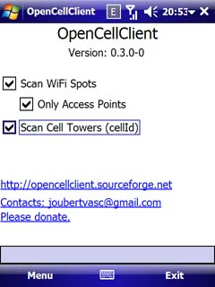

| Início | Notícias | Ajuda | Suporte | Download | Licença | Código | Alterações | Tarefas | Doações |
O projeto OpenCellID tem o objetivo de mapear o mundo inteiro se baseando nas torres de celular. Funciona assim: fazendo uma consulta a partir de informações fornecidas pelas torres de celular o serviço devolve as coordenadas geográficas. Porém, a torre deve ter sido cadastrada no serviço juntamente com suas coordenadas. É nesse ponto que o OpenCellClient entra em funcionamento. Você irá utilizar esse aplicativo enquanto caminha, pedala, dirige ou viaja por via terrestre. O dispositivo irá identificar todas as torres de celular por onde passar, identificará as coordenadas a partir do GPS e armazenará localmente as informações. Não é necessário permanecer conectado na internet para envio das informações para o serviço OpenCellId. Você poderá se conectar quando desejar, inclusive usando algum hotspot público ou conexão com a internet residencial, sem a necessidade de gastar com tráfego de dados. Como esse aplicativo ajuda ao OpenCellID a mapear o planeta, outro aplicativo crucial se beneficiará dos resultados: o RemoteTracker. |
 |

Esse aplicativo é extremamente útil, pois em caso de perda ou roubo você poderá localizá-lo remotamente através do uso do GPS a partir de mensagens curtas (SMS) enviadas por qualquer celular. O RemoteTracker também se vale das informações dos serviços fornecidos pelo projeto OpenCellID, beneficiando também os usuários de dispositivos sem GPS, ou quando seu aparelho não é capaz de localizar o sinal do GPS (por estar dentro de casa por exemplo).
|
Contato: joubertvasc@gmail.com |